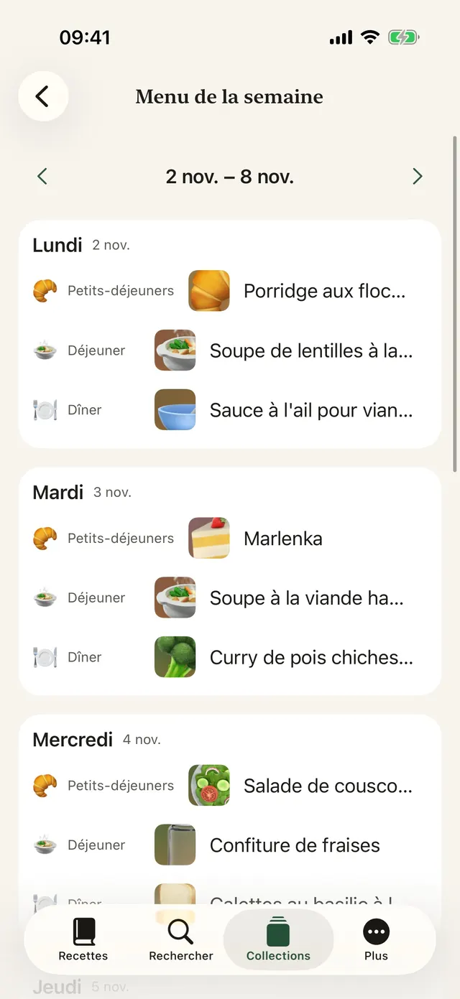
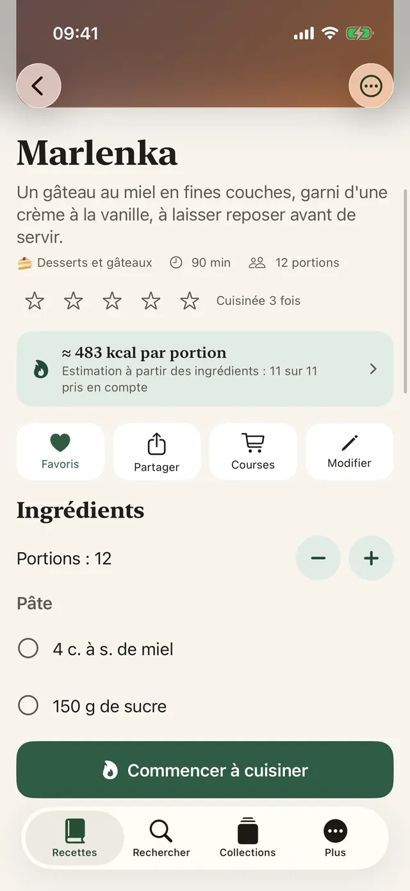
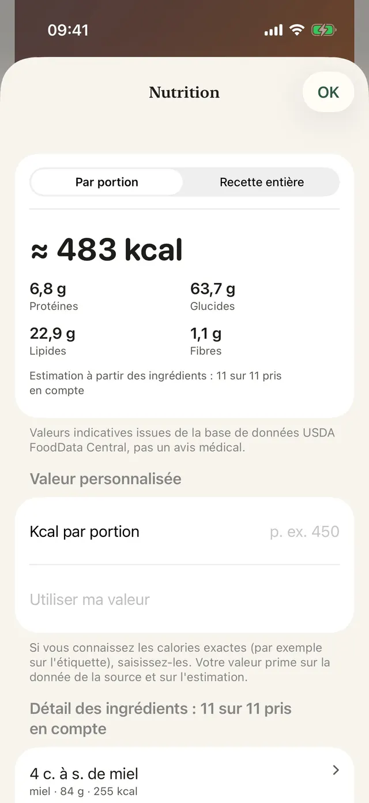
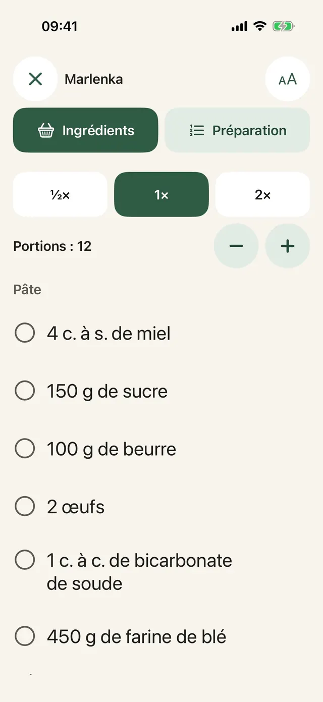
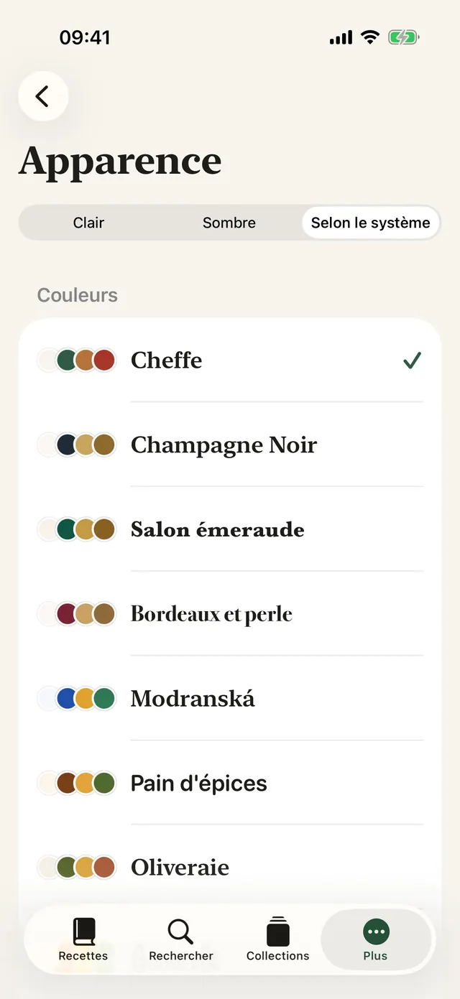
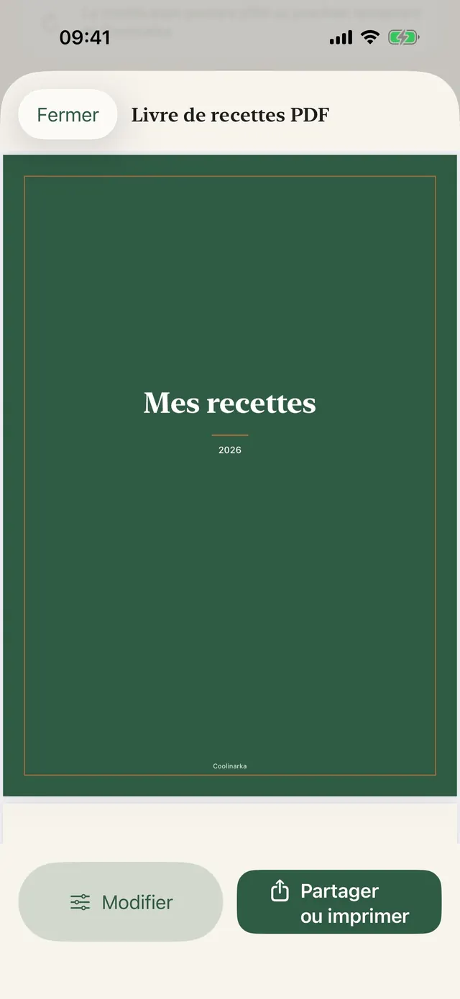
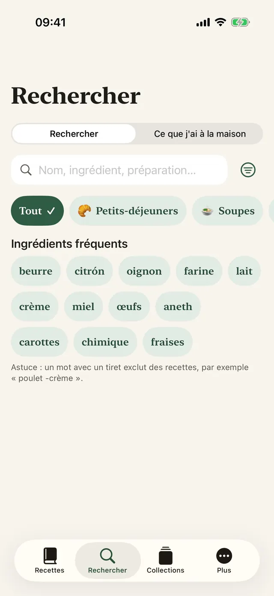
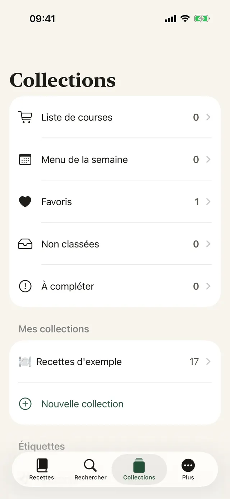

Enregistrée d'une touche
Dans Instagram, Facebook ou Safari, touchez Partager et choisissez Coolinarka.
Enregistrez une recette depuis Instagram, Facebook, le web ou une vidéo. Coolinarka la transforme en ingrédients et étapes bien clairs, puis vous guide pas à pas en cuisine.
Pour iPhone et iPad, gratuit. La version Android arrive bientôt sur Google Play.

Voici à quoi ressemble une recette dans une publication sur les réseaux sociaux. Une touche et tout est en ordre, avec des portions que vous pouvez recalculer.
😍😍 Penne au brocoli et sauce à la crème!!! 400 g de penne, 1 brocoli, 250 ml de crème liquide, 2 gousses d'ail, 50 g de parmesan, sel et poivre ... Cuire les penne selon les indications du paquet, en ajoutant les bouquets de brocoli pour les 4 dernières minutes. Faire revenir brièvement l'ail dans l'huile, verser la crème et réchauffer. Égoutter les pâtes et le brocoli, les mélanger à la sauce et parsemer de parmesan. 🔥🔥 #penne #food
Des pâtes simples que même les enfants adorent.
Recette d'exemple de l'app. Les vraies publications sont souvent encore plus désordonnées, et Coolinarka s'en sort, même à partir d'une capture d'écran ou d'une vidéo.
Grand texte, une seule étape à l'écran, et il ne s'éteint pas. Lancez un minuteur d'une simple touche, même les mains pleines de farine.
Dans cette démo, le minuteur tourne en accéléré.
Cuire les penne selon les indications du paquet, en ajoutant les bouquets de brocoli pour les 4 dernières minutes.
Les ingrédients de plusieurs recettes s'additionnent. Changez de pays et regardez le mot recherché passer dans la langue du magasin, même si la recette est dans une autre langue.
Vous ajoutez l'article au panier dans le magasin. L'app n'a aucun accès à votre compte client. La disponibilité dépend de votre adresse.
Une Française à Londres, un Belge à New York, une Suissesse à Rome. Dans un magasin à l'étranger, un petit malentendu suffit pour trouver autre chose dans le panier. Coolinarka cherche dans la langue du magasin pour que cela ne vous arrive pas. Savez-vous ce que vous rapporteriez ?
Neuf thèmes avec leur propre icône, un mode sombre et un texte plus grand. Choisissez-en un et toute cette page change, exactement comme l'app.
De vrais écrans, dans la langue de cette page.








Dans Instagram, Facebook ou Safari, touchez Partager et choisissez Coolinarka.
Une vidéo ou un enregistrement d'écran devient une recette, et la parole est transcrite directement sur votre téléphone.
Planifiez toute la semaine, complétez les cases vides avec vos favoris et envoyez le tout dans votre liste de courses.
Types de plat, étiquettes, favoris et collections personnelles.
Par nom, ingrédients ou préparation, avec ou sans accents.
Le widget Quoi cuisiner aujourd'hui sur l'écran d'accueil et l'écran verrouillé, et Siri : « Que cuisiner dans Coolinarka ».
Le destinataire l'ouvre dans Coolinarka avec sa photo, sans vos notes ni vos remarques.
Recadrage, rotation et filtres.
Les recettes se synchronisent via iCloud entre les appareils utilisant le même compte Apple.
Sauvegardez votre collection ou transférez-la vers une autre app.
Y compris les recettes d'exemple et l'estimation des calories.
L'app fonctionne sans compte, sans publicité et sans suivi. Les recettes restent sur votre appareil et dans votre iCloud privé, et le développeur n'y a pas accès.
Les recettes, l'importation, l'exportation, les sauvegardes, iCloud et le mode cuisine ne coûtent rien. Plus est un achat unique, sans abonnement, et peut être partagé en famille.
Les valeurs sont indicatives et ne constituent pas un avis médical. Le calcul s'effectue sur l'appareil.
Téléchargez Coolinarka et enregistrez votre première recette dès aujourd'hui.
Pour iPhone et iPad, gratuit. La version Android arrive bientôt sur Google Play.